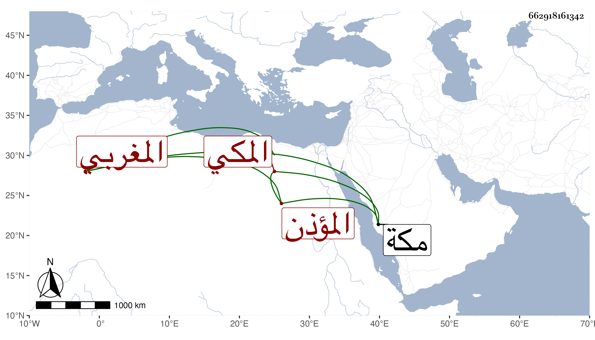

0902Sakhawi.DawLamic.ITO20230111-ara1.EIS1600.662918161342
Biography ID: 662918161342
999
سليمان بن أبي السعود بن عمر المغربي ثم المكي المؤذن بالمسجد الحرام . ممن سمع على الشمس البرماوي نظم ثلاثيات البخاري وشرحه وولي نصف الأذان بمأذنة باب العمرة بل كان ينوب عن الريس في الأذان على زمزم والتكبير مع معرفة بالتوقيت . مات بمكة في المحرم سنة تسع وخمسين .
